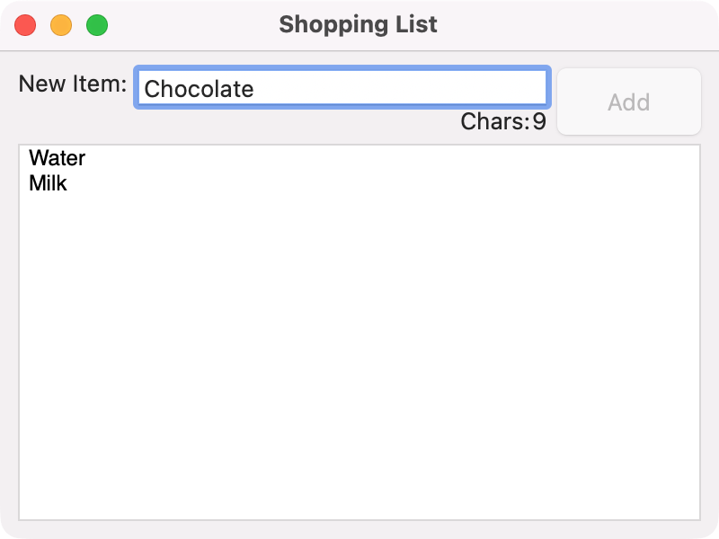

課題の進め方
基本的には適当なプロジェクト/ソリューションを作って課題を進めた上で，MainForm.csを提出する．
採点はコマンドラインからdotnet new etoappを実行した上でMainForm.csを提出されたもので上書きすることにより行う．
採点者は基本的に採点者自身の環境で動作確認を行うことに注意する．
第6回課題においてMainForm.cs以外に提出に含めたいものがある場合（たとえば画像ファイル等）は事前にメール（メールアドレスはClassroom内「受講者用案内」を参照）で相談のこと．
他の人（受講者・非受講者両方）に解答内容（一部でも）を見せない，そして他の人の解答内容（一部でも）を見ないこと．コピペ（一部でも，媒体問わず）も剽窃の一種であり，レポートにおける剽窃は試験における不正行為と同様に扱われることに留意お願いします．また，公開の場所に解答を置かないようお願いします．GitHubやBitbucket等は使える人は使えばよいと思いますが，privateレポジトリにするようにお願いします．
プロジェクト/ソリューションの作成
Note
再掲：プロジェクトは一つの実行形式やライブラリを作成するためのコード等を全てまとめたものであり，ソリューションは関連するプロジェクトをまとめたもの（参考：What are solutions and projects in Visual Studio?）．
指定された名前（課題5ではQ5，課題6ではQ6とする）の空のフォルダを適当な場所に新規作成し，
VSCodeで作成したフォルダを開く．そして，VSCode内のターミナルで以下を実行する．
dotnet new etoapp -sln作成したプログラムの実行方法については「第0回 環境構築2（C#演習用）」の「動作確認」の手順2以降を参照．
課題の実施
MainForm.cs を問題文の指示の通りに編集する（提出・採点手続きの簡略化のため提出する.csファイルは一つのみ）．作成した.csファイルには先頭部分に学籍番号と名前をコメントとして含めること．また，自身のプログラムの動作確認を行ったプラットフォームの情報（Mac, Gtk, Wpfの別．複数可．わからないならOS名）も含めるものとする．こちらの情報はあくまで念のためであり，基本的には採点者は自身の環境で動作確認を行う．なので，たとえば学籍番号Z0TB9999の東北 大学さんの提出ファイルは，もし当人が動作確認を.Macを用いて行ったのであれば
// Z0TB9999
// 東北 大学
// 動作確認：Mac という行から始まる．
また，.csprojに変更を加えた場合は，その旨と具体的な変更内容を上記の後にコメントとして含めるものとする．たとえば，Q5.csprojというプロジェクトファイルにおいてPropertyGroup以下にあるTargetFrameworkをnet8.0に変更したのであれば，以下のような行を含める．
// Q5.csproj の /Project/PropertyGroup/Target の内容を net8.0 に変更した提出
できあがった MainForm.csをClassroom内の当該回の「課題」より提出する．また問題文に指示がある場合はそのファイル（例：課題6で提出物に含めたいリソースがある場合）も提出する．提出前には以下を確認しよう．
-
- ただし，友人の解答を見ない（一部でも），そして友人に解答を見せない（一部でも）ようお願いします
基本課題
買い物リストを管理するアプリケーションを考える．本当はリストの表示にListBoxやGridViewなどを使ったほうがよいのだろうが，今回は簡単のためにTextAreaを用いることにする．
その1
ラベルを
Labelボタン（そのボタンテキストがButton）を
(Button)テキストボックスを
[ ]テキストエリアを
+-------------+
| |
| |
+-------------+というアスキーアートとして図示することにする．
このとき，Eto.Formsを用いて以下のようにコントロールが配置されているウィンドウを作成しなさい． ただし，テンプレートから生成されたコードのうち，MainForm.cs のみ変更すること．
New Item: [ ] (Add)
+-------------------------------------+
| |
| |
| |
| |
| |
+-------------------------------------+ただし，以下を満たすこと．
- "New Item:"の部分は
Labelを用いて実現 - 上部のテキストボックスは
TextBoxを用いて実現 - "(Add)"の部分は
Buttonを用いて実現(や)の部分はボタンのラベルに含まれないことに注意
- 中央のテキストエリアは
TextAreaを用いて実現- 表示用で入力用でないので
ReadOnlyプロパティをtrueに設定したほうがよいが，しなくてもよい
- 表示用で入力用でないので
- ウィンドウのサイズは十分に大きい（たとえば500x400程）
- テキストボックスにはプレースホルダーテキストを設定してもよいし，しなくてもよい
PlaceholderTextプロパティ（string型）を用いると設定できる．
- ウィンドウサイズの変更に伴い，テキストボックスの幅，テキストエリアの高さと幅が伸縮するように
その2
上記のアプリケーションに以下の機能を実装せよ．
- "Add"ボタンが押された（クリックされた）ら以下の処理を行う
- テキストボックスの中身を改行付きで，テキストエリアに追加（append）する．
- テキストボックスの中身をクリアする
たとえば，テキストボックスに"Water"を入力して"Add"ボタンを押すと以下のようになる．
New Item: [ ] (Add)
+-------------------------------------+
| Water |
| |
| |
| |
| |
+-------------------------------------+ここで，さらにテキストボックスに"Milk"を入力して"Add"ボタンを押すと以下のようになる．
New Item: [ ] (Add)
+-------------------------------------+
| Water |
| Milk |
| |
| |
| |
+-------------------------------------+Tip
テキストボックスに入力されたテキストを取得するにはTextプロパティを用いる．テキストエリアにテキストを設定するには，当該オブジェクトのTextを用いる．ただし，末尾への追加にはTextArea.Appendメソッドを使ったほうが便利である．
発展課題
Important
本課題を完了できたのならば本課題の解答のみを提出すればよく，基本課題の解答は提出する必要はない．
さて，買い物リストに追加するのにあまりに長い文字列は追加したくないし，空文字列も追加するのも（ここでは）変であろう．そこで以下の変更を行うことにする．まず，コントロールの配置を以下のようにする．
New Item: [ ] (Add )
Chars: 0 ( )
+-------------------------------------+
| |
| |
| |
| |
| |
+-------------------------------------+すなわち
- テキストボックスの下に文字数カウントを表示するためのラベル（"Chars: 0"の部分）を用意する．これは1つのラベルで実現しても，2つのラベルで実現してもよい．
- "Add"ボタンが縦長になる．テキストボックスの行と文字数カウントの行にまたがるようにし，ボタンの上端がテキストボックスの上端に，そしてボタンの下端が文字数カウントの行の下端に揃うようにする．
- テキストボックスの右端と文字数カウントの表示部分の右端が揃うようにする．
- 基本課題と同じく，ウィンドウサイズの変更に伴い，テキストボックスの幅，テキストエリアの高さと幅が伸縮するように
とする．なお，右上箇所は"Add"ボタンの下にラベルのないボタンがあることではなく"Add"ボタンが縦長になることを表している．
ヒント：StackLayoutをさらにネストする．3重以上にネストすると管理がつらいと思われるので，適当に名前をつけるとよい．
Tip
StackLayoutの各要素（StackLayoutItem）には，個別にHorizontalAlignmentやVerticalAlignmentを設定できる．やり方の一つはコンストラクタに以下のように引数として渡す．
new StackLayout {
Orientation = Orientation.Vertical,
Items = {
// この要素は右寄せ
new StackLayoutItem(control1, HorizontalAlignment.Right),
// この要素は左寄せ
new StackLayoutItem(control2, HorizontalAlignment.Left),
// この要素は左右一杯．さらに第3引数にtrueを渡すと当該要素が伸縮するようになる
new StackLayoutItem(control3, HorizontalAlignment.Stretch, true)
}
} そして，以下の機能を追加する．
- テキストボックスに入力中の文字数を，文字数カウントの部分に表示する
- 文字数カウントが1〜8の間だけ"Add"ボタンを有効にするようにし，それ以外の場合は無効にする
なお，最初および"Add"ボタンを押した直後は，テキストボックスの中身が空なので，"Add"ボタンは無効であることに注意する．
参考までに，以下のスクリーンショットは作成するプログラムの一例である．"Chocolate"は9文字なので"Add"ボタンが無効になっている．

Tip
テキストボックスの内容に変化があったときに何か処理を行うには TextBox.TextChangedイベントを購読する．
Tip
文字数のカウントは string.Length プロパティを利用したのでよいことにする．ただし，この方法は絵文字等に対してはうまく動かない．
Tip
ボタンの有効無効の設定はControl.Enabledプロパティを用いる．